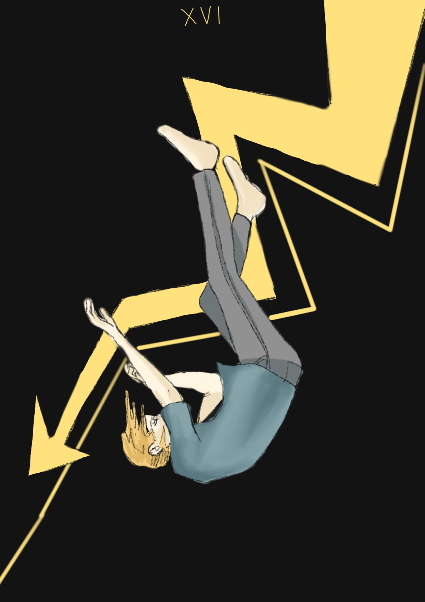

The tower
부끄러운 비밀, 은닉, 은폐, 사회적 가면, 연극적 요소, 왜곡, 허위나 과장된 방어물, 구속력, 구습(구체체)의 붕괴
탑은 대비밀 카드 중 유일하게 인간이 만든 구조물이다. 따라서 미노스처럼 자신의 내부와 외부에 만든 구조물을 상징한다.
그것은 삶에 대해서도 물론이고 열등감을 감추기 위한 방어물이다.
여러 면에서 우리 내면의 짐승을 감추는 사회적 가면이다.
직업, 신용, 고위 기관과의 연계, 사회적 지위, 정치적 미소, 외교적 교환, 대중을 의식한 외양, 가정에서 주입된 도덕 등을 이용하여 자신의 부끄러운 비밀을 감춘다.
탑은 허위 또는 과장된 구조물이다. 그것은 진정한 자기로부터 나온 것이 아니라 덧입혀진 것이다.
마치 관중들에게 보여주기 위한 연극의상처럼, 이처럼 자신의 불안전성을 감추기 위해 외부 세계에 만들어 놓은 구조물을 상징한다.